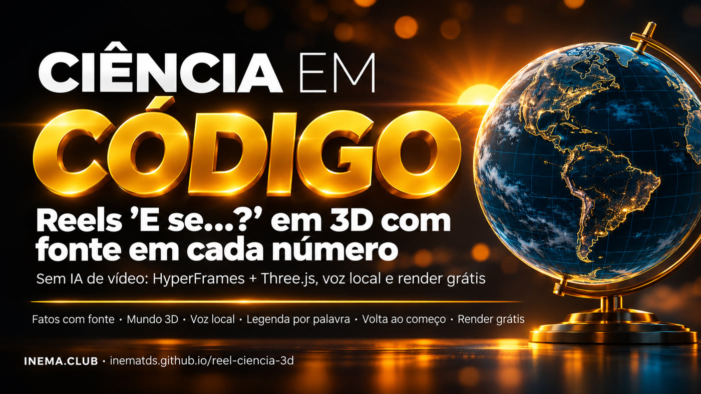

Você faz a pergunta e decide no que confia. O Claude pesquisa as fontes, monta o mundo 3D, gera a voz no seu computador e entrega o MP4. Nenhuma imagem desenhada por IA, e o render é grátis.

O reel-ciencia-3d é um kit com uma skill para o Claude Code: transforma uma pergunta como "E se a Terra não tivesse inclinação?" num vídeo vertical de cerca de 60 segundos para Reels, Shorts e TikTok. Serve para professor, divulgador e criador que quer vídeo de ciência sem errar número. Tudo é feito com código (HyperFrames para o vídeo, Three.js para o 3D), cada número aparece com a fonte, a voz é gerada no seu computador e o reel volta ao começo sem emenda. Você precisa de Node.js, ffmpeg e do Claude Code.
Ciência pede número exato. Um gerador de vídeo erra rótulo, muda o gráfico de uma cena para outra e cada conserto custa crédito. Com código, o número da tela é o que você digitou.
Antes de animar, o Claude escreve o fatos.md. Sem fonte (NASA, NOAA, Marinha, universidade), o número não entra na tela nem na voz. Conta própria aparece como CÁLCULO.
Os mesmos objetos aparecem como o mundo de hoje e como "planta técnica" azul do mundo "e se". Tem globo com os continentes reais (Natural Earth) e só uma cor quente, o amarelo da coisa principal.
A voz sai do seu computador (Chatterbox + Whisper) com o tempo de cada palavra. A legenda, os cartões e a câmera entram no instante em que a palavra é dita.
Quatro decisões ficam com você: a ferramenta, os fatos, a mensagem com o visual, e o julgamento do resultado. O resto é trabalho pesado do Claude e dos scripts.
Escolhe a pergunta e a resposta que o reel tem que provar, aprova o roteiro, olha as imagens paradas e pede uma mudança por vez.
Pesquisa e confere as fontes, escreve o roteiro, monta a página e o 3D, tira as imagens de conferência e julga o MP4 com as 3 perguntas.
HyperFrames: transforma uma página HTML animada em MP4. Three.js: 3D no navegador. Aparelho: o medidor fixo no canto (inclinação, cronômetro). Batida: cada trecho do roteiro. Planta técnica: a aparência azul do mundo "e se". LUFS: a medida de volume das redes (−14).
voz.py (voz + Whisper), montar.py (relógio e legenda), mezcla.py (música em código), preparar.py, e o HyperFrames para conferir e renderizar.
Render, voz e música rodam no seu computador. O único custo é o seu plano do Claude.
O HyperFrames baixa sozinho na primeira vez (com o navegador que renderiza).
node --version ffmpeg -version npx hyperframes doctor # diz o que falta
O instalar.sh liga a skill nos dois e testa o exemplo.
git clone https://github.com/inematds/reel-ciencia-3d cd reel-ciencia-3d bash instalar.sh
O voz.py usa o Chatterbox (gera a voz a partir de ~15 s da sua voz gravada) e o Whisper (ouve e marca o tempo de cada palavra), instalados pelo inemavox. Sem eles, use o caminho sem voz do passo 3.
export INEMAVOX_DIR=~/inemavox # Whisper + worker do Chatterbox export CHATTERBOX_PYTHON=~/miniconda3/envs/chatterbox/bin/python3 export VC_VOZ=/caminho/sua-voz.wav # ~15 s limpos
Troque <id> pelo nome da pasta do seu reel (ex.: dia-48h). Os 3 exemplos de exemplos/ foram feitos exatamente assim.
Abra o Claude Code na pasta do kit e cole o cartão de prompts/1-cartao-de-pedido.md, trocando a pergunta, a resposta, as batidas e o aparelho.
# trecho do cartão Use a skill reel-ciencia-3d. Faça um reel vertical de ~60 s: "E se o dia durasse 48 horas?" 1. Fatos primeiro. Escreva exemplos/dia-48h/fatos.md: cada número com fonte...
É a decisão mais importante. Leia a tabela "Deixado de fora": é lá que ficam as curiosidades famosas sem fonte. Você decide no que confia.
cat exemplos/<id>/fatos.md # fonte + citação + data em cada linha
A voz é o relógio do reel: cada legenda, cartão e movimento de câmera sai do tempo das palavras. <rid> é o campo "id" do roteiro.json (nos exemplos: terra, sol, lua). O mezcla.py faz a música em código e mistura com a voz.
# com voz local python3 ferramentas/voz.py --projeto exemplos/<id> exemplos/<id>/roteiro.json python3 ferramentas/montar.py --projeto exemplos/<id> # → js/tempos.js (legenda pronta) python3 ferramentas/mezcla.py --projeto exemplos/<id> --id <rid> --musica tranquila # sem voz: só legenda e música (o tempo de cada palavra é estimado pelo texto) python3 ferramentas/montar.py --projeto exemplos/<id> --sem-voz # mostra o "fim" em segundos python3 ferramentas/mezcla.py --projeto exemplos/<id> --id <rid> --duracao <fim> --musica tranquila
Ele parte de um exemplo pronto e troca o conteúdo: aparelho no topo, cartões com a linha de fonte, legenda e o js/mundo.js com as cenas. Fazendo à mão, comece copiando o exemplo (sem a voz e o som dele).
cp exemplos/terra-sem-inclinacao/{index.html,hyperframes.json,package.json} exemplos/<id>/ cp -r exemplos/terra-sem-inclinacao/js exemplos/<id>/ # depois troque js/mundo.js e os cartões python3 ferramentas/preparar.py --projeto exemplos/<id> # motor + duração + som final cd exemplos/<id> && npx hyperframes check # 0 erros
Conferir uma imagem leva segundos; consertar uma animação pronta leva muito mais.
npx hyperframes snapshot --at 0,5,15,25,35,45,55,67 --no-end -o stills
Dá para ler tudo no celular? A escala é honesta? Há uma coisa clara para olhar? Peça só uma mudança de cada vez, deixando o resto igual.
Mude só a câmera da cena da Antártida para a estação aparecer inteira. Mantenha todo o resto. Tire a imagem de novo.
Cerca de 5 minutos para um reel de 65 s, no seu computador.
npx hyperframes render --output renders/<id>.mp4
Quadros do arquivo final, não da prévia. Confira medidas e volume e passe o checklists/antes-de-publicar.md.
ffmpeg -i renders/<id>.mp4 -vf fps=1/3,scale=216:-1,tile=8x3 renders/folha.jpg ffprobe renders/<id>.mp4 # 1080x1920, 30 fps ffmpeg -i renders/<id>.mp4 -af ebur128 -f null - # ≈ −14 LUFS
Cada um tem fatos.md, roteiro.json, o código do mundo 3D, a voz e o som prontos em exemplos/<id>/. O MP4 sai com npx hyperframes render dentro da pasta.
O formato pode repetir; o assunto e a pesquisa, não. Cada reel tem que ensinar algo novo.